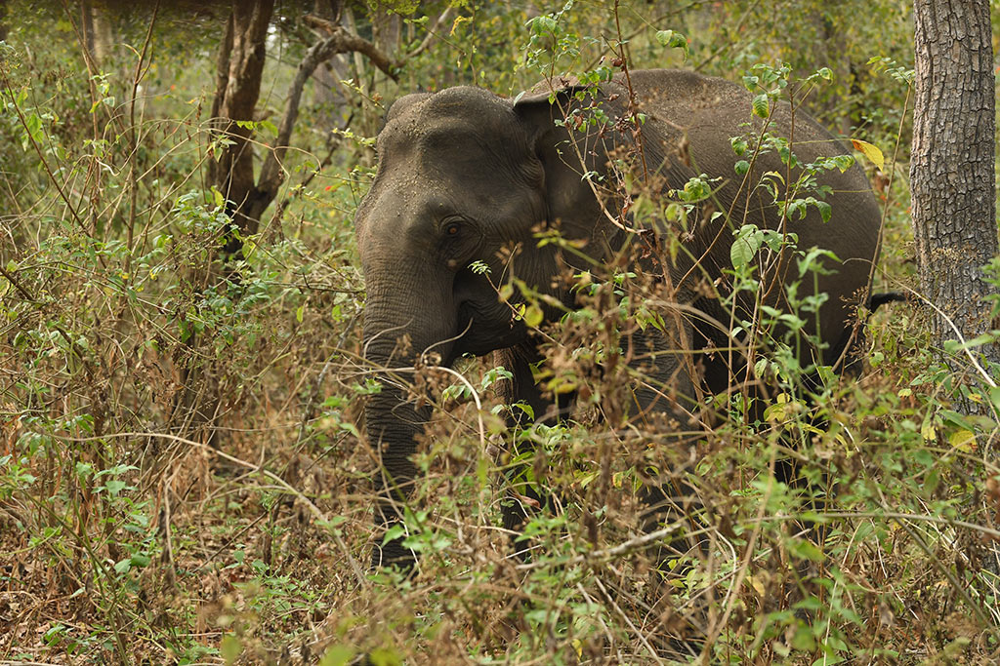
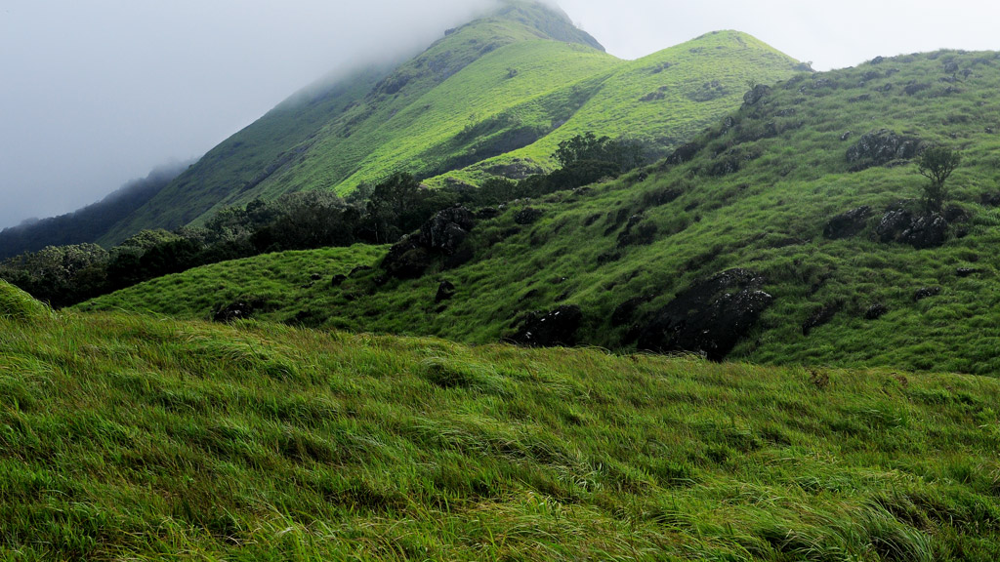
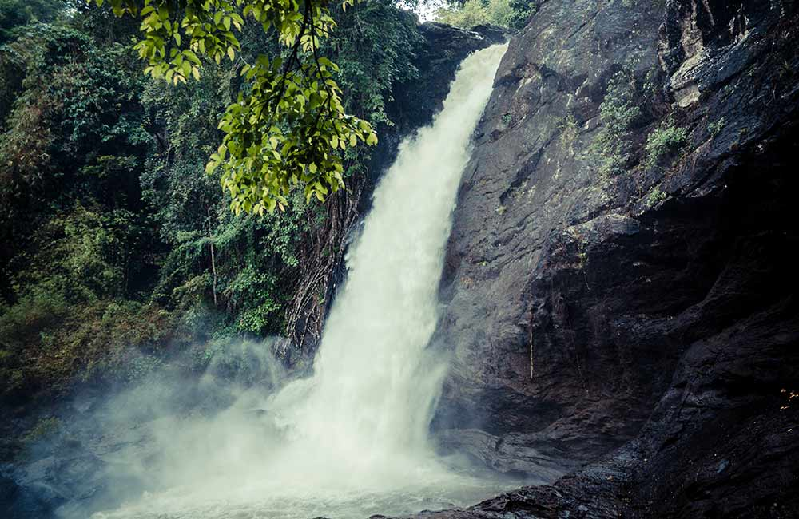

Muthanga Wildlife Sanctuary
Established in 1973, the Muthanga Wildlife Sanctuary is contiguous to the protected area network of Nagarhole and Bandipur of Karnataka on the north east and Mudumalai of Tamil Nadu on the southeast. Rich in bio-diversity, the sanctuary is an integral part of the Nilgiri Biosphere Reserve. The management lays emphasis on scientific conservation with due consideration for the general lifestyle of the tribals and others who live in and around the forest region. The Sanctuary has a large population of pachyderms and has been declared a Project Elephant site. Elephants roam freely here and tigers are sighted occasionally as well. Various species of deer, monkeys and birds also live here. The Reserve is also home to a profusion of birds, butterflies and insects. The trees and plants in the sanctuary are typical of the south Indian moist deciduous forests and semi-evergreen forests. A drive along the road to Muthanga and further offers chances to watch these roaming animals. Elephant rides can be arranged by the Forest Department.
Edakkal Caves

Edakkal Caves are situated about 16 km from Sulthan Bathery and tourists have to trek up the Ambukuthi Hill to reach the caves. The trek up the hill, peppered with coffee plantations, is worth an experience and it takes almost 45 minutes to climb the hill. The lush greenery and scenic landscape around and the cool breeze that carries the aroma of coffee will surely make your journey an unforgettable one.The name of Edakkal Caves literally means `a stone in between’. As the name indicates, it seems that one boulder miraculously wedged in between two bigger ones to create a cave.The discovery of the caves dates back to 1895 and it is associated with the then Superintendent of Police of Malabar District, Fred Fawcett. He was on a hunting trip to Wayanad and happened to notice in the coffee estate a stone axe which had been used by a Neolithic Celt.The caves are replete with various etchings and prehistoric line drawings and the nature of representations on the cave walls indicate that the caves were occupied by various sets of people during various stages of history. Three distinct sets of petroglyphs can be seen in the caves and some depictions are as old as 7000 years. Edakkal is the only known place for stone age carvings in South India. The carvings belonging to Neolithic and Mesolithic Age include ancient stone scripts, ancient weaponry figures, symbols, figures of various animals and human beings etc.Images of a tribal king, a queen, a child, a deer and an elephant can be seen on the wall. A human figure with headgear, another on a wheeled cart and some male and female figures too can be seen. There are images of tools used by earlier human beings and many other symbols which suggest the presence of pre historic men.
Banasurasagar Dam

Situated about 15 km from Kalpetta, the dam holds a large expanse of water and its picturesque beauty is enhanced by the chain of mountains seen on the backdrop. It is constructed in the Banasura Lake and the nearby mountains are known as Banasura Hills. Legends say that the Asura king of Banasura, (the son of King Mahabali, who is believed to visit Kerala during every Onam festival) undertook a severe penance on the top of these hills and thus it was named after him. The scenic mountains beckon adventure tourists and the dam site is an ideal starting point for trekking. During monsoon, visitors may also be able to see small islands in the dam’s reservoir. They are formed while the flooded reservoir submerges the surrounding areas too. The vast expanse of the crystal clear water of the dam dotted with small islands is a photographer’s delight.
Chempra Peak
Chembra peak is situated near Meppady town and it is about 17 km from Kalpetta. It is the tallest peak in the region and a trek to the 6890 ft peak is a challenge that is difficult to resist for an adventure tourist.A drive from Meppadi to the foothill of the peak is breathtaking and you can feel the cool wind and the lush greenery of tea estates on both sides of the road rejuvenating your spirits. You can see a three-storied forest watch tower on the foothill of the peak and a three kilometre trek from the foothill is at the same time tiring and exciting. A heart-shaped crystal perennial lake fed by natural springs can be seen at the middle of your journey. Even if it is scorching summer, the lake brims with water and helps you quench your thirst.It is said that during the British era, British planters came here to play golf in the evenings and they constructed a stable for their horses and a rest house in the area. The relics of the rest house can be seen here even now.
Sentinel Waterfalls
The three-tiered Soochipara Falls in Vellarimala, also known as Sentinel Rock Waterfalls, is a beautiful place in Wayanad. The sight of large volumes of water cascading from a height of 656-feet among lush green forests and massive rocks is a visual treat! Apart from spending some tranquil time near the falls, you can also take a bath or swim in the pool below and go rock climbing. People drive across tense terrains and walk a naturally rocky pathway to reach the summit. But they never complain about the end result. At Soochippara, water falls from a height of 20 metres and forms a pool before gushing away as a small stream. The nearby rock is 200 metres high and resembles a needle so it got the name needle rock. Wayanad puts together a statement of magnificence powerful enough to conquer all hearts.